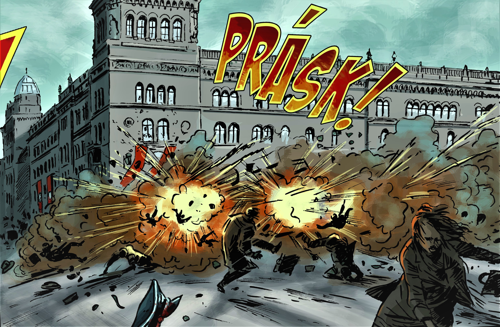

TŘI KRÁLOVÉ, HRDINOVÉ OBDOJE
Pravidla hry
Půjdete po konkrétních místech města Prahy. Ocitnese se mezi léty 1940
až 1942, kdy se mimořádně stateční lidé postavili zlu, které postihlo
naši zemi. Jednotlivé lokace jsou vybrány podle příběhů, které se
opravdu odehrály nebo jsou na hraně fikce. I pomocí vašich
rekonstrukcí se může podařit odhalit, co se skutečně tehdy odehrálo. V
této fázi projektu představujeme jenom obrysy hry. Pravidla a
konkrétní místa budou představena v další fázi vývoje projektu. Nechte
se překvapit a těšte se na procházku Prahou, která vás zaujme hned na
první lokaci a tou je Petschkův palác – nynější sídlo Ministerstva
vnitra, dřívější sídlo Gestapa.
